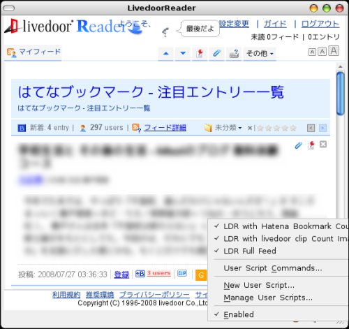
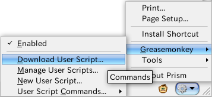
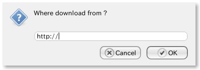

For Mozilla Prism forked from original repository
enable to make user scripts to work.
Feature
can download user scripts
- show a prompt from Commands menu -> Greasemonkey -> Download User Script...
- input the URL of a user script
Screenshots



 @github
@github